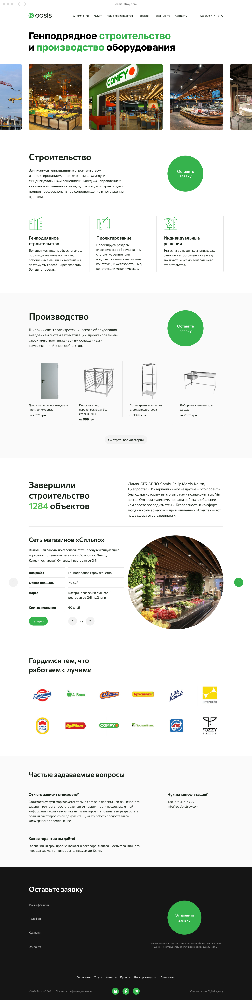
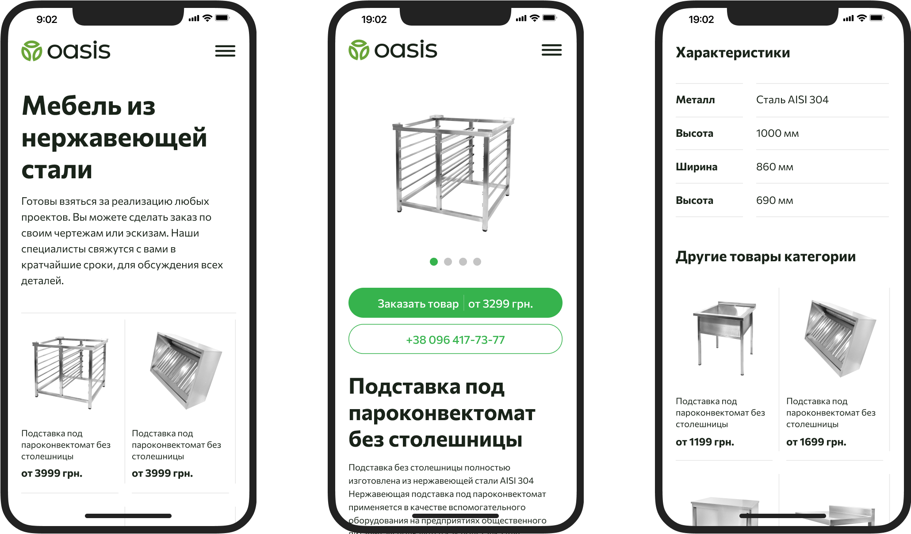

<!DOCTYPE html>
<html lang="en">
  <head>
    <meta charset="UTF-8">
    <meta name="viewport" content="width=device-width, initial-scale=1.0">
    <meta http-equiv="X-UA-Compatible" content="ie=edge">
    <link rel="shortcut icon" type="image/png" href="assets/icon.png">
    <link rel="stylesheet" href="style.css">
    <meta name="viewport" content="width=device-width, initial-scale=1.0, maximum-scale=1.0, user-scalable=no">
    <script src="https://cdnjs.cloudflare.com/ajax/libs/gsap/3.7.1/gsap.min.js"></script><script src="https://code.jquery.com/jquery-3.6.0.min.js" integrity="sha256-/xUj+3OJU5yExlq6GSYGSHk7tPXikynS7ogEvDej/m4=" crossorigin="anonymous"></script>
    <title>Oasis Stroy</title>
  </head>
</html>
<body>
  <!--header-->
  <div class="header wrapper">
    <div class="header__container container"><a class="p" href="index.html">Дмитрий Онофриенко</a><a class="p" href="https://telegram.me/dmitriyonofrienko" target="_blank">Телеграм</a></div>
  </div>
  <div class="case__hero container">
    <div class="case__title grid">
      <p class="h1">2020</p>
      <h1 class="h1">Сайт для строительной компании «Oasis stroy»</h1>
    </div>
    <div class="case__text grid">
      <div class="case__caption case__para">   
        <p class="p caption">Проект сделан для Idea Digital</p>
        <p class="p caption">В примерах используется промежуточная версия макета</p>
      </div>
      <div class="case__para">
        <p class="p">Oasis Stroy — компания, которая занимается строительством промышленных объектов и производит товаровы для их оснащения.  </p>
        <p class="p">Новый стиль сайта подчеркивает свою дружелюбность и аккуратность. Одна из задача, которая ставилась во время работы над проектом — уйти от классического представления строительных компаний прошлых поколений.</p>
      </div>
    </div>
  </div>
  <div class="case__content"> 
    <video class="video" src="assets/oasis/oasis_01-2-min.mp4" alt="" autoplay mute="true" loop></video>
  </div>
  <div class="case__container">
    <div class="case__para"> 
      <h2 class="h2">Продажа товаров</h2>
      <p class="p">У каждой категории есть своя витрина с товарами. А каждая страница сайта адаптирована для мобильных устройств.</p>
    </div>
  </div>
  <div class="case__content"> </div>
  <div class="case__content tablet">
    <div class="proper"></div>
  </div>
  <div class="case__content oasis_bcg">
    <div class="proper"></div>
  </div>
  <div class="case__container"> 
    <div class="case__para"> 
      <h2 class="h2">Выполненные проекты</h2>
      <p class="p">Важные потребности для клиентов — это срок выполнения работ и их качество. Поэтому каждый опубликованный проект сопровождается данными, по которым можно оценить объем работ и срок выполнения. </p>
      <p class="p">Оазис показывает адреса завершенных проектов поэтому каждый может оценить качество своими глазами. Кроме этого для каждого проекта есть своя галерея с фотографими интерьеров.</p>
    </div>
  </div>
  <div class="case__content oasis_bcg tablet">
    <div class="proper">
      <video src="assets/oasis/oasis_06-min.mp4" alt="" autoplay loop mute="true" style="max-width: 900px"></video>
    </div>
  </div>
  <div class="container grid2"> </div>
  <div class="case__container">
    <div class="case__para"> 
      <h2 class="h2">Услуги компании</h2>
      <p class="p">Страница рассказывает и показывает, как происходит строительство, этапы работ, фотографии завершенных проектов, перечисление компетенций в строительных работах. </p>
      <p class="p">Как конкурентное преимущство выделено, что клиенты могут в режиме реального времени, смотреть как происходит процесс строительства через установленные камеры.</p>
    </div>
  </div>
  <div class="case__content"> </div>
  <script src="script.dev.js"></script>
</body>